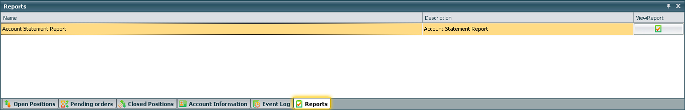

Reports¶
Reports Window¶
The reporting system consists of a set of tools that make it possible to obtain information regarding the owner of the account, the account transactions, open positions or allow you to generate detailed reports on all trades.
Features:
- Ability to generate a report for a certain period of time specified by the user;
- The choice of accounts, in order to obtain reports on various accounts;
- Ability to create all types of reports that can be claimed by the owner of the account.
- When you click the reports button, a new window opens up that allows you to see reports opened.
Another way that you are able to open the Reports window is on the bottom right of the following window.
- This will open up a new window that allows you to select a report’s time period (Account Statement Report).